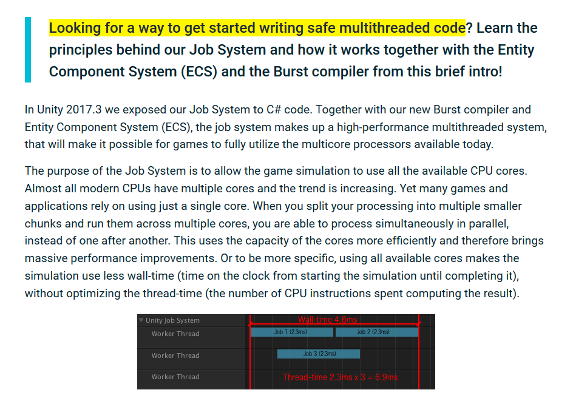
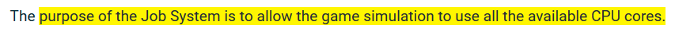
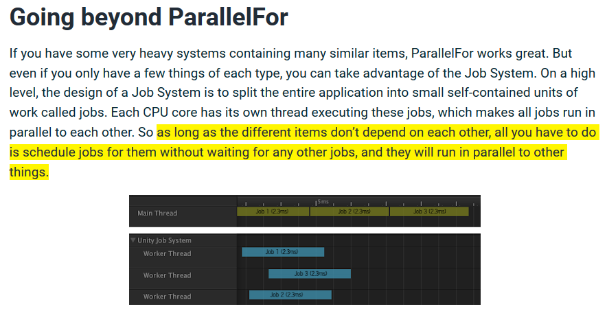
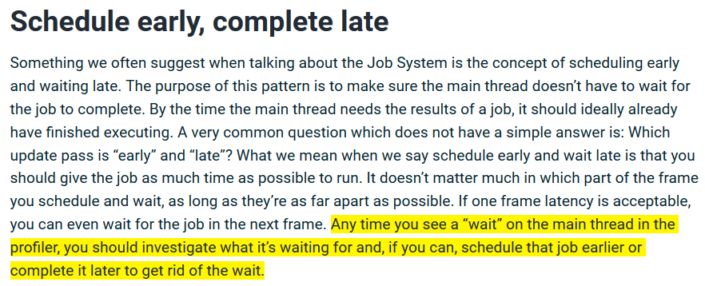
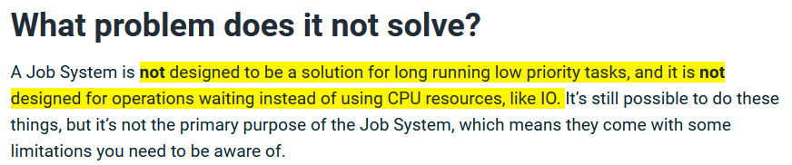
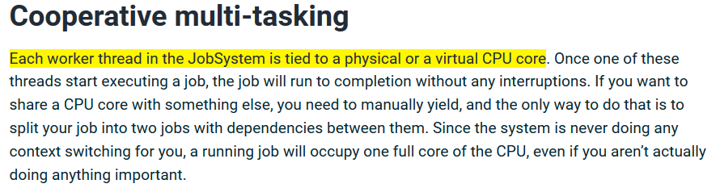
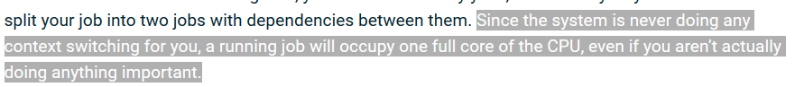
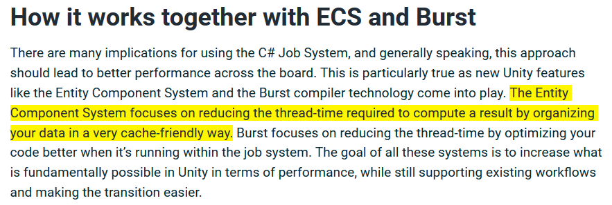
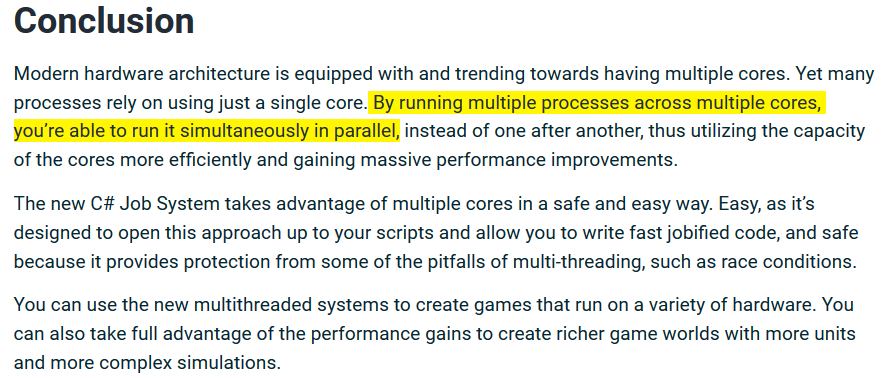

g-engine.unity.optimize.multi-thread
overview
[ecs]
[c# job system]
[burst compiler]
Overview

Overview

Overview

Overview

Overview

Overview

Overview

Overview

Overview

Overview
more @ github
more @ unity
more @ unity-forum
REF
unity blog -
what is a job system?